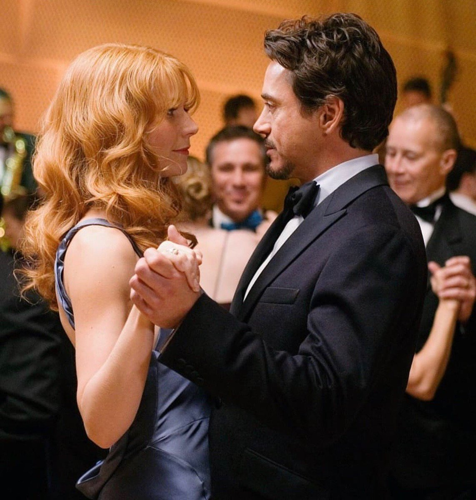

IRON MAN

Synopsis
Starting off strong, we have Iron Man. Released in 2008, this story revolves around a billionaire industrialist and genius inventor, Tony Stark (Robert Downey Jr.), who is conducting weapons tests overseas, but terrorists kidnap him to force him to build a devastating weapon. Instead, he builds an armored suit and upends his captors. Returning to America, Stark refines the suit and uses it to combat crime and terrorism.
Opinion
Personally, I loved this film. I am not the biggest fan of movies that involve a lot of fight scenes and any sort of violence, but this movie blew me away. When talking about the characters themselves, Tony Starks aka Iron Man and Pepper Pots were my favourite. Obviously Tony is on the top two, since he is the main character. But there is something about his character that makes you fall in love with him instantly. Whether it’s is confidence or sense of humour, something causes him to stand out from the rest. But his intelligence in relation to the world of technology was amazing. While he was kidnapped, he was able to create a full suit from scratch (like Obadiah said). And his character development was not overlooked. After going through rough event, his outlook in relation to his father’s company changed. Concluding that the weapons built by Stark Industries caused more harm than good. This realization rose something from within, causing Tony to use his (new and improved) iron suit for the better. And through everything, Pepper was always by Tony’s side. Her character was simple, but I liked her. She did no cause any sort of chaos as she sided with Tony, but at the same time, did not have a large impact on the plot line or any of the other characters. I have mixed feelings when it comes to her impact on Tony’s original playboy character.